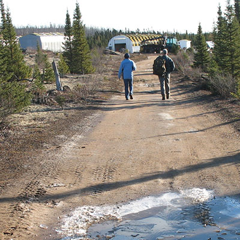

ISO Standard Management Systems: OHSMS & EMS
D&K team members have significant expertise in the development of Occupational Health & Safety Management Systems (OHSMS), and Environmental Managements Systems (EMS), integrating ISO Standards into these systems to meet all requirements.
D&K provides professional services in the development of Environmental Management Systems (EMS), including:
- Gap analyses - incorporating a full analysis of systems already in place at a facility which could form part of an EMS
- Development of required EMS elements and sub-elements related to the ISO 14001:2015 Standard
- Recommending effective and efficient document control processes
- Facilitating the assessment of the context of the organization including internal and external issues which could influence EMS outcomes; associated risks & opportunities; and the needs and expectations of interested parties
- Recommending and implementing procedures for aspect and impact analyses
- Advising on effective processes for managing nonconformities
- Documenting operational procedures and monitoring systems
- Analyzing the potential for environmental emergencies and preparing contingency plans
- Developing processes for audits and internal management reviews
- Providing assistance and advice related to requirements and effective preparation for registration audits and surveillance audits of EMSs to the ISO 14001:2015 level
- Conducting Environmental Management System audits
- Developing Action Plans to address deficiencies identified in Environmental Management System audits
D&K provides professional services in the development of Occupational Health & Safety Management Systems (OHSMS), including:
- Gap analyses - incorporating a full analysis of systems already in place at a facility which could form part of an OHSMs
- Development of required OHSMS elements and sub-elements related to the ISO Standard
- Recommending effective and efficient document control processes
- Facilitating the assessment of the context of the organization including internal and external issues which could influence OHSMS outcomes; associated risks & opportunities; and the needs and expectations of interested parties
- Recommending and implementing procedures for hazards and risk analyses
- Advising on effective processes for incident investigation and management of nonconformities
- Documenting operational procedures and monitoring systems
- Analyzing the potential for OH&S emergencies and preparing contingency plans
- Developing processes for audits and internal management reviews
- Providing assistance and advice related to requirements and effective preparation for registration audits and surveillance audits of OHSMSs to the ISO 45001:2018 level
- Conducting OH&S Management System audits
- Developing Action Plans to address deficiencies identified in OH&S Management System audits

Compliance Assessment
Assessing compliance with regulatory requirements at a hazardous waste storage site